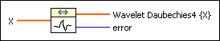
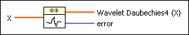
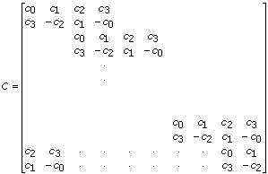
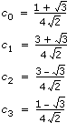

Wavelet Transform Daubechies4 VI
Owning Palette: Transforms VIs
Requires: Full Development System
Computes the wavelet transform based on the Daubechies4 function of the input sequence X.

 Add to the block diagram Add to the block diagram |
 Find on the palette Find on the palette |
Owning Palette: Transforms VIs
Requires: Full Development System
Computes the wavelet transform based on the Daubechies4 function of the input sequence X.

| Add to the block diagram |
Find on the palette |
 |
X is the samples of the input signal. The length of the signal has to be a power of 2, otherwise an error code is given. |
 |
Wavelet Daubechies4 {X} returns the calculated wavelet Daubechies4 transform. |
 |
error returns any error or warning from the VI. You can wire error to the Error Cluster From Error Code VI to convert the error code or warning into an error cluster. |
The Wavelet Transform Daubechies4 transform can be defined using the transformation matrix
.
Here blank entries signify zeros. The numbers c0, c1, c2, and c3 have to fulfill certain orthogonal properties
c02 + c12 + c22 + c32 = 1
c2c0 + c3c1 = 0
c3 – c2 + c1 – c0 = 0
0c3 – 1c2 + 2c1 – 3c0 = 0
with the unique solution
.
 | Note You can solve the previous system of nonlinear equations in c0, c1, c2, and c3 directly with the nD Nonlinear System Single Solution VI of this package. |
The Wavelet Daubechies4 transform of the array X is defined by
Wavelet Daubechies4{X} = C * X